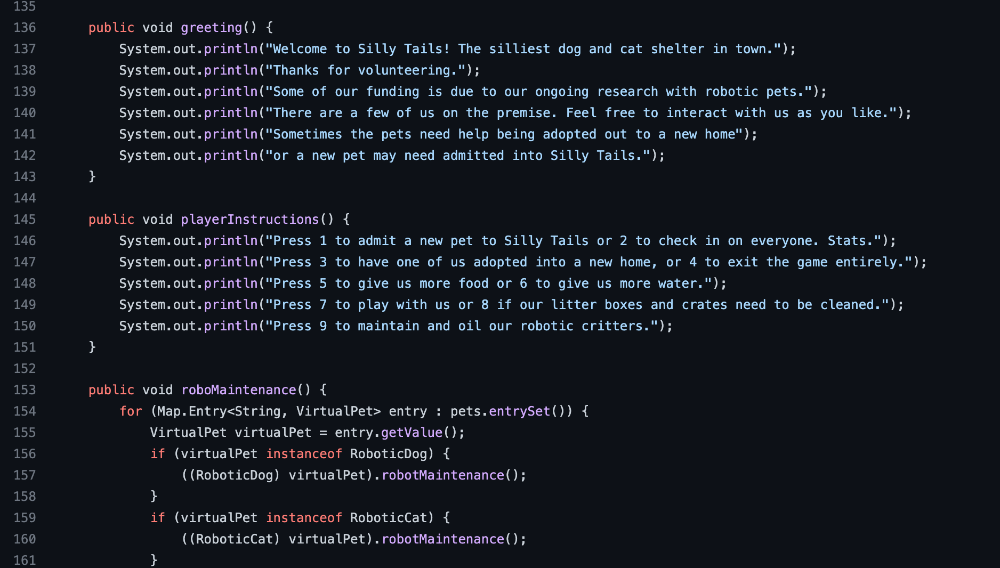
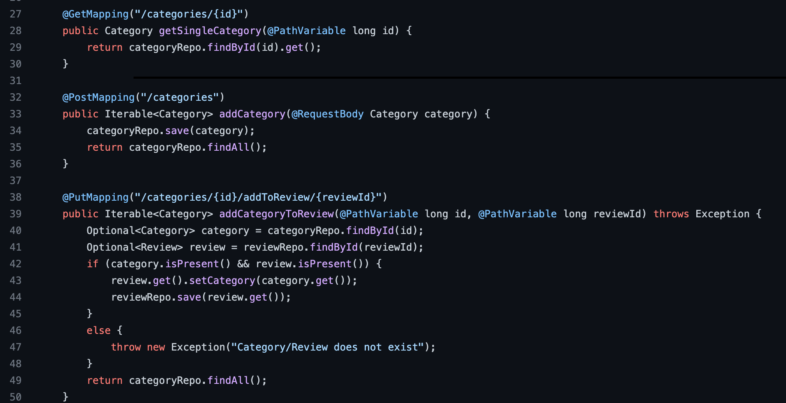
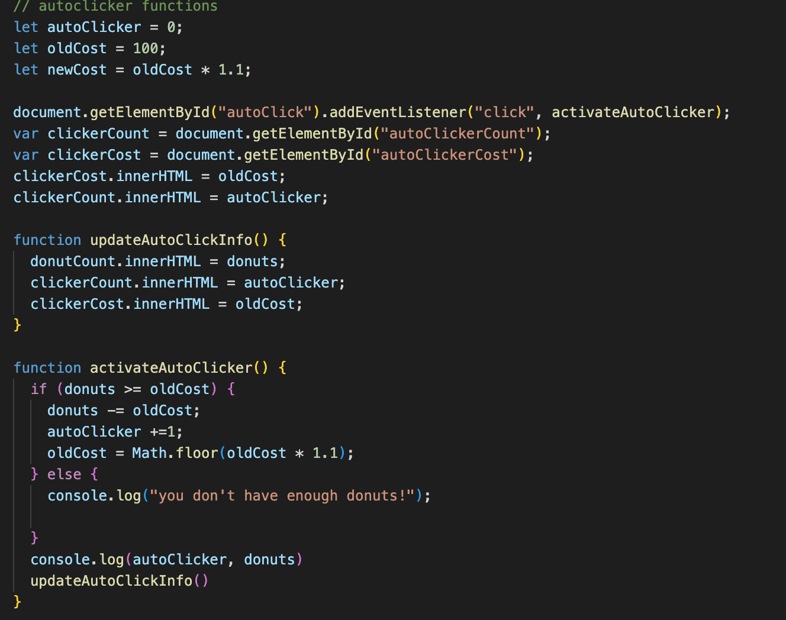

Projects I've Worked On

This is a virtual pet shelter that has the ability to admit and adopt different kinds of pets.
You can interact with the pets by feeding them and playing with them, etc. This project requires knowledge of
inheritance, hashmaps, and TDD. I utilized Java, GitHub, and IntelliJ IDEA.
Click here to see Virtual Pet Amok on GitHub


A tribute to the game Cookie Clicker. I created a game that uses button clicks to create donuts.
The donuts can be used as currency to buy Auto Clickers and Donut Multipliers, which are used to make even more donuts.
I utilized Javascript, HTML, and CSS.
Click here to see Donut Maker on GitHub
Return Home